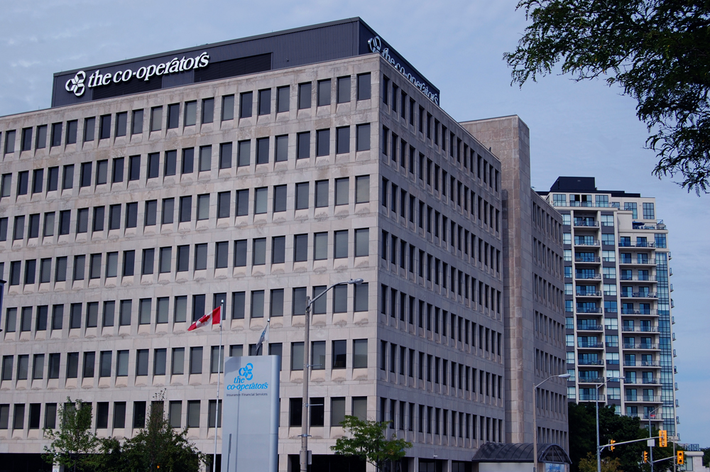

Rajbir Deol on COOP
Welcome!! I am a third year Software Engineering Student at the University of Guelph. I will be reporting on my third coop work term at the Co-opertaors working for the technical support team! Look to the left for helpful navigation headers or just start scrolling!!
Employer
Technical Support Analyst Co-op Student

The Co-operators are a Canadian insurance and financial services co-operative. They work in three areas: Property and Casualty insurance, Life insurance and institutional investments. They support about 5000 employee and work hard at creating a sustainable society.
At the Co-operators, I worked on the Technical Platform Support (TPS) Team, providing second level support to their employees. This team was the base of tech support at the Co-operators. The team interacted heavily with Co-operator’s employees and the various other teams to provide technical support. The team was compromised of roughly 25+ individuals, who worked across Canada in Regina, Moncton, Mississauga, Burlington, and Guelph (I worked in the Guelph office).
TPS was a great team to work with. The team was very friendly and made me feel like I was a part of their team from day one. They did a tremendous job guiding me through my role and were very approachable for question asking
Job Description
TPS monitors and responds to problem tickets created by first level Help Desk support, internal teams, and self-serve tickets created by employees. The tickets are sent to two separate queue, an unassigned tickets queue, and a self serve ticket queue. These tickets include hardware and software problems reported by a large group of users across multiple geographic locations. My main job as a Technical Support Analyst was to take incidents are resolve them. This meant performing basic troubleshooting, diagnosis, and root-cause analysis, to figure out how to solve a ticket. Since, users submitted tickets from various geographical locations, this required the TPS team members to work in shifts. The shifts spanned a week, and were divided in to 4 types of shifts; early shift (7:00 AM – 3:30 PM), late Shift (9:00 AM – 5:30 PM and 9:30 AM – 6:00 PM), regular shift (8:30 AM – 5:00 PM), self-serve shift (8:00 AM – 4:30 PM). Each shift had specified responsibilities, that needed to be completed while you were working that shift.
TPS had a knowledge bases full of articles that provided instructions on common issue/errors and articles around Co-operators polices. Another aspect of the jab was helping maintain this knowledge bases. By constantly attaching knowledge articles to tickets, and creating and maintaining knowledge articles for new and existing known errors utilizing standard enterprise tools and processes. Since, I was a co-op student, I didn’t have to learn how to approve knowledge articles when they were submitted by other team members.
While I was there, I was asked to create an application that would automate the creation of a virus report. This report gets created every month to keep track of how many virus-related tickets the team handles, what types of virus are being found on computers, and track sites that virus are being downloaded from. The data for the report comes from various different places, I used PowerShell to
Goals
 My main goal on this work term was to strengthen my oral and written communication skills. Due to the nature of this job, I spent most of my time communicating with clients and when I first started my work term, I struggled with getting information from the client, was really awkward, and didn't know how to end or start conversations. To improve this skill I answered phone calls and simply allowed the client to speak and tried to understand their problem. If something didn't make sense I asked questions to help clarify, and then repeated what their issue was to make sure I fully understood the client. This proved to be successful because near the end of my work term the client rarely corrected my assumption of their problem. Also, on the various survey responses, I got back, I have complimented on my polite nature and my ability to solve there issue quickly.
My main goal on this work term was to strengthen my oral and written communication skills. Due to the nature of this job, I spent most of my time communicating with clients and when I first started my work term, I struggled with getting information from the client, was really awkward, and didn't know how to end or start conversations. To improve this skill I answered phone calls and simply allowed the client to speak and tried to understand their problem. If something didn't make sense I asked questions to help clarify, and then repeated what their issue was to make sure I fully understood the client. This proved to be successful because near the end of my work term the client rarely corrected my assumption of their problem. Also, on the various survey responses, I got back, I have complimented on my polite nature and my ability to solve there issue quickly.
Having now completed this work term, I can see a drastic change in my approach and ability to communicate. I now can deal with clients with a lot of confidence, easily explain information to a client and understand what they are saying. I feel this skill will help me throughout my career and allow me to interact with users/coworkers in a positive manner while maintaining a professional demeanour. It has also helped develop my ability to explain a technical process in layman's terms.
 Another goal I had on this work term was getting better at finding out what the client's problem is, and what might be causing it. Since the clients did not have technical knowledge, they didn't explain their problem using the correct terminology, so I had to get better at reading between the lines. I did this by asking simple questions, that helped me get the details I need. Had a reserve of quick solutions, which were things that typically solved the problem (for example, clear cookies and cache). When I really didn't know what the client problem was, I put them on hold and either asked my coworkers/supervisor or did some research to understand what the client was explaining.
Another goal I had on this work term was getting better at finding out what the client's problem is, and what might be causing it. Since the clients did not have technical knowledge, they didn't explain their problem using the correct terminology, so I had to get better at reading between the lines. I did this by asking simple questions, that helped me get the details I need. Had a reserve of quick solutions, which were things that typically solved the problem (for example, clear cookies and cache). When I really didn't know what the client problem was, I put them on hold and either asked my coworkers/supervisor or did some research to understand what the client was explaining.
This goal truly tested me as this is was a constant occurrence in the help centre. Generally, our clients don't know what they are talking about and therefore entails a lot of information gathering to really find out what they need to resolve their issue. I have become much better at this and no longer even hesitate to ask for help from my coworkers. Furthermore, this was a skill worth improving because I will be working with users who don't have the same technical knowledge as me. I need to be able to analysis and inquire information in non-technical terms that the user with understand
Conclusions
I am very grateful that I had the opportunity to do my first co-op term at the CCS Help Centre. Working with Help Centre, I learned a lot about interacting with end users and was able to strengthen so many of my soft skills. Although there were not many opportunities to apply my coding skill or many of the software methodologies learned in school, there were still many things I experienced working here that I would never have had the chance to otherwise. For future work terms, I will look to find a more technical job that will allow me to use the skills I am learning in school in tandem with all the soft skills I developed on this work term. In the I could not have asked for a better first work term, that resulted in a guaranteed part-time job while I study at the University of Guelph.
Acknowledgments
I would like to thank the Help Centre supervisor, Jill Hogg for being the best supervisor I will ever have. I have been extremely lucky to have a supervisor who was so caring, understanding and who has provided amazing guidance throughout my work term.
My special thanks are extended to the full-time staff, who worked alongside the Help Centre, they're guidance was invaluable.
I am very grateful to the student team, I would not have enjoyed this work term had it not been for all the new friends I made working alongside them. I want to thank them for doing all those tickets I didn't want to handle and laughing at all my bad jokes :)
I want to thank the SOCS coop team for all the help and support during, before and after my co-op term. Also thanks to Greg Koltz!